1. 시작하기 전에 — 이 매뉴얼 보는 법
홈페이지에는 두 가지 모습이 있습니다.
관리자 화면 (어드민)
목사님이 글·사진·메뉴를 올리고 고치는 “뒤쪽” 화면입니다. 로그인해야 들어갈 수 있어요.
사이트 화면 (성도들이 보는 곳)
성도님이나 처음 방문하시는 분들이 보는 “앞쪽” 화면입니다. 로그인 없이 누구나 볼 수 있어요.
읽는 요령
이 매뉴얼은 거의 모든 화면을 두 장씩 짝으로 보여드립니다.
왼쪽엔 어드민(관리자) 화면, 오른쪽엔 사이트(성도들이 보는) 화면.
어드민에서 입력하신 글이 사이트에서는 어디에 어떻게 나오는지 한눈에 비교하실 수 있습니다.
준비물
- 인터넷이 되는 컴퓨터 또는 휴대폰 (크롬·사파리·엣지 어느 것이든 OK)
- 관리자 아이디 (이메일)와 비밀번호 — 담당자에게 받으셨을 거예요
주소 외워두기
| 이름 | 주소 | 언제 들어가나요 |
|---|
| 홈페이지 (성도용) | https://gaggaun.vercel.app/ | 평소 사이트 확인할 때 |
| 관리자 로그인 | https://gaggaun.vercel.app/login | 관리자 일 하실 때 |
| 관리자 첫 화면 | https://gaggaun.vercel.app/admin | 로그인 후 자동으로 여기로 옵니다 |
참고
홈페이지 주소가 곧 가까운교회.com 같은 자체 도메인으로 바뀔 수도 있어요. 그때는 앞부분만 바뀌고 뒷부분(/login, /admin 등)은 그대로입니다.
2. 로그인하기
관리자 화면에 들어가는 첫 단계입니다.
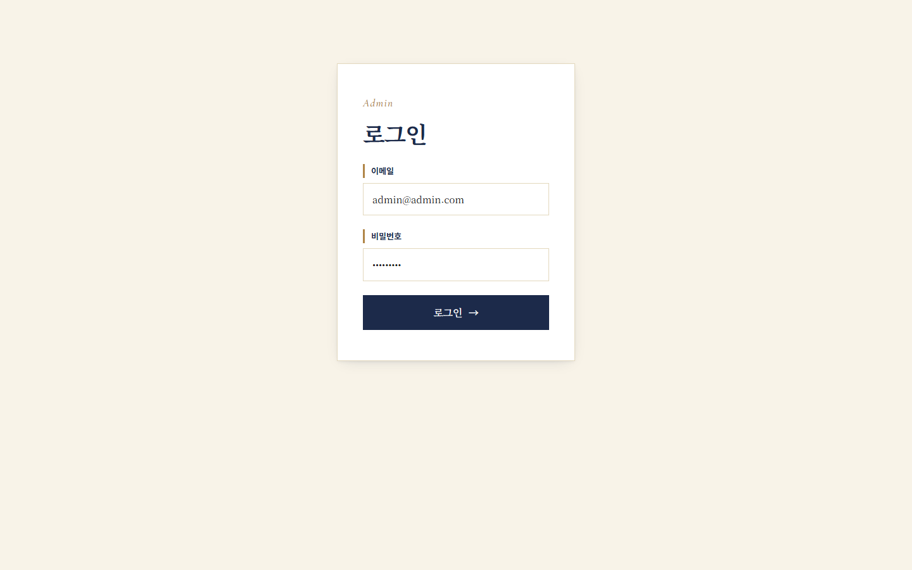
📍 위치 · /login | 사이트 어디서든 주소창에 /login을 붙이시면 들어옵니다.
1
이메일 — 담당자에게 받으신 관리자 이메일을 적습니다.
3
로그인 → 버튼을 누르시면 잠시 후 관리자 첫 화면(대시보드)으로 이동합니다.
주의
다른 사람과 컴퓨터를 같이 쓰시면 일 다 끝나신 뒤에 오른쪽 위 “로그아웃”을 꼭 눌러주세요. 그래야 다른 사람이 글을 지우거나 바꾸지 못합니다.
3. 관리자 대시보드 한눈에 보기
로그인하시면 가장 먼저 보이는 화면입니다. 사이트의 현황과 빠른 이동 메뉴가 모여 있어요.
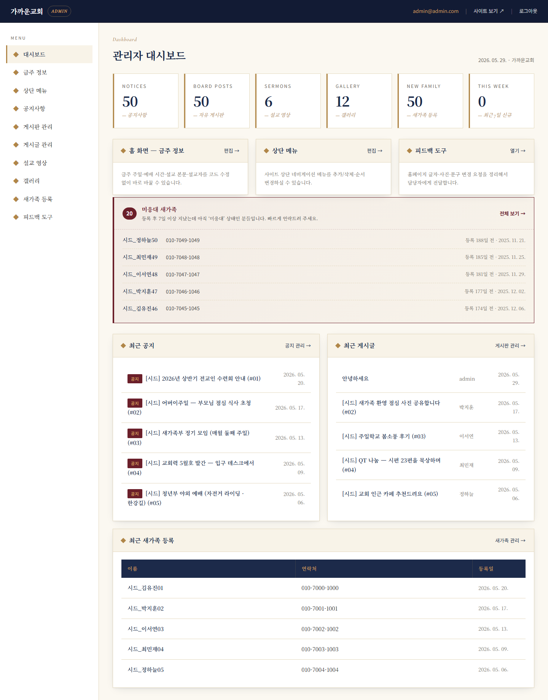
📍 위치 · /admin
1
왼쪽 사이드 메뉴 — 작업하시려는 항목을 클릭해 이동합니다. (대시보드 · 금주 정보 · 공지사항 · 게시판 · 설교 영상 · 갤러리 · 새가족 등록 · 피드백 도구)
2
숫자 카드 6개 — 공지·게시글·설교·사진·새가족 등록 수를 한눈에 봅니다. 카드를 클릭하면 그 화면으로 바로 갑니다.
3
홈 화면 / 상단 메뉴 / 피드백 도구 — 자주 쓰는 3개 도구로 바로 가는 단축 버튼입니다.
4
미응대 새가족 — 등록 후 7일 넘게 연락 안 된 새가족이 있을 때만 빨간 박스로 알려드립니다. 보이시면 빨리 연락 부탁드려요.
5
최근 공지 / 최근 게시글 / 최근 새가족 — 가장 최근에 들어온 내용 5건씩 보여드립니다. 클릭하면 해당 글로 이동합니다.
6
오른쪽 위 “사이트 보기 ↗” 를 누르면 성도들이 보는 화면이 새 창으로 열려서 확인하실 수 있습니다.
4. 금주 정보 바꾸기 (매주 하는 일)
홈페이지 첫 화면 맨 위에 보이는 이번 주 예배 정보 띠를 바꾸는 화면입니다. 가장 자주 들어오시는 곳입니다.
관리자 화면 — 여기서 입력
사이트 화면 — 이렇게 보입니다
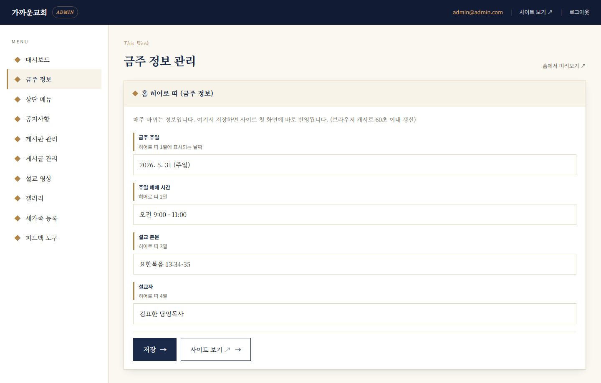
📍 위치 · 사이드 메뉴 → 금주 정보
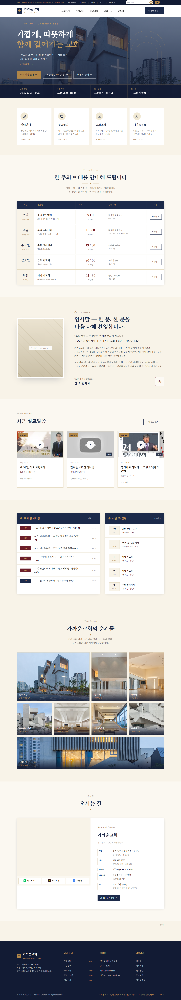
📍 위치 · 홈 첫 화면 (/) 맨 위 띠
입력 항목 4가지
1
금주 주일 — 예: 2026. 5. 31 (주일) 처럼 적어주세요.
2
주일 예배 시간 — 예: 오전 9:00 · 11:00
3
설교 본문 — 예: 요한복음 13:34-35
- 4칸을 새로운 내용으로 채우세요. (글자만 바꾸시면 됩니다)
- 맨 아래 “저장 →” 버튼을 누르세요.
- “저장되었습니다 ✓” 가 위쪽에 잠깐 뜹니다.
- 오른쪽 위 “홈에서 미리보기 ↗” 를 눌러 사이트가 잘 바뀌었는지 확인하세요.
팁
저장 직후엔 사이트에 바로 보이지만, 이미 사이트를 켜놓은 다른 분의 화면에는 1분 정도 후에 반영됩니다.
급하시면 그분께 “새로고침(F5) 한 번 해주세요” 라고 안내해 주세요.
주의
이 4칸은 매주 바뀌는 정보입니다. 빈 칸으로 비우시면 안 됩니다. 이번 주에 특별한 안내가 없으시면 작년의 같은 양식 그대로라도 무언가는 적혀 있어야 합니다.
5. 공지사항 올리기
교회 전체 공지를 올리는 곳입니다. 부고·총회 일정·임시 휴무 등 “꼭 알리고 싶은 글”에 쓰입니다.
① 공지 목록 화면
관리자 — 공지 목록·검색·삭제
사이트 — 성도들이 보는 공지 목록
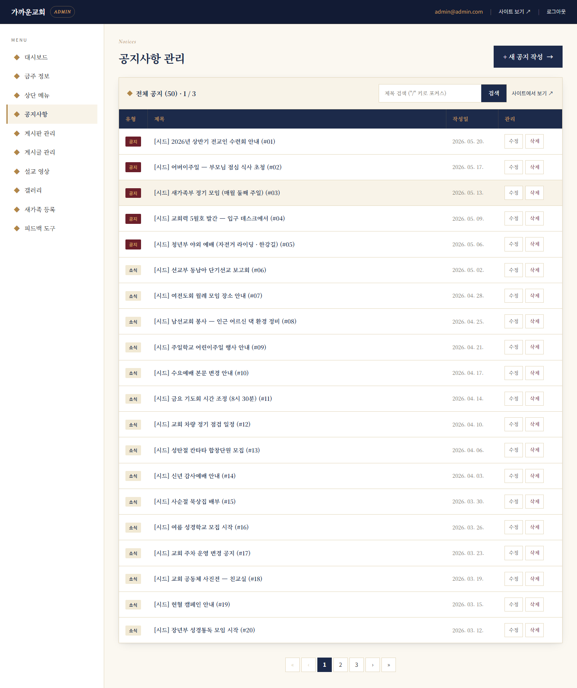
📍 위치 · 사이드 메뉴 → 공지사항
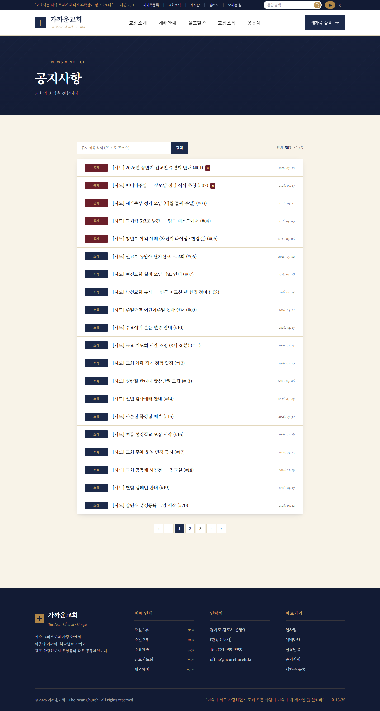
📍 위치 · 사이트 상단 메뉴 → 교회소식 → 공지사항
1
왼쪽의 붉은 “공지” 라벨은 상단 고정 공지입니다. 사이트에서도 항상 맨 위에 표시됩니다.
2
회색 “소식” 라벨은 일반 글입니다. 시간이 지나면 자연스럽게 아래로 내려갑니다.
3
오른쪽 끝의 수정 · 삭제로 글을 고치거나 지울 수 있습니다. 삭제 시 확인 창이 한 번 더 뜨므로 안심하세요.
4
상단 검색창에 제목 일부를 적으시면 빠르게 찾을 수 있습니다.
② 새 공지 작성
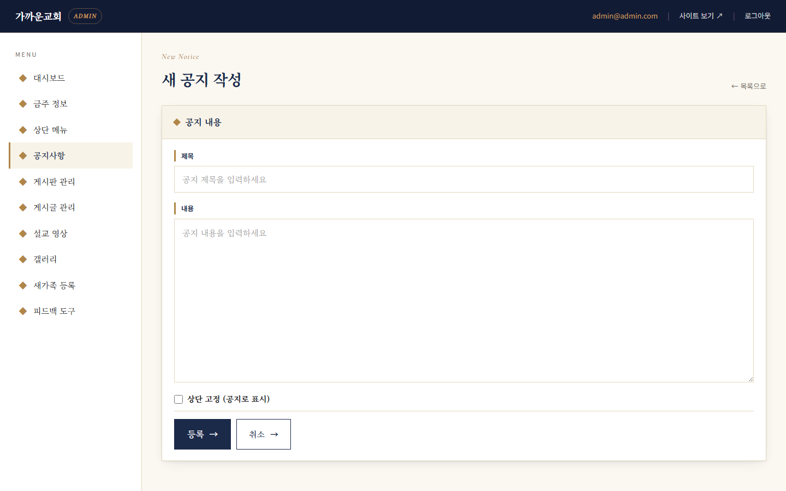
📍 위치 · 공지 목록 오른쪽 위 + 새 공지 작성 버튼
- 제목을 입력합니다. (예:
5월 31일 임시당회 안내)
- 내용에 본문을 적습니다. 줄바꿈을 그대로 살려주세요.
- 꼭 알려야 하는 공지면 아래쪽 “상단 고정 (공지로 표시)”에 체크합니다. 그러면 빨간 “공지” 라벨이 붙고 맨 위에 고정됩니다.
- 등록 버튼을 누르면 즉시 사이트에 올라갑니다.
팁
상단 고정은 정말 중요한 공지에만 쓰세요. 너무 많으면 성도들이 “이게 다 공지구나” 하고 안 보게 됩니다. 보통 1~3개만 고정해두는 것이 좋습니다.
6. 게시판 만들기 · 관리하기
교회 안에 여러 게시판(자유게시판, 기도제목, 질문답변 등)을 만들고 관리하는 화면입니다.
① 게시판 목록
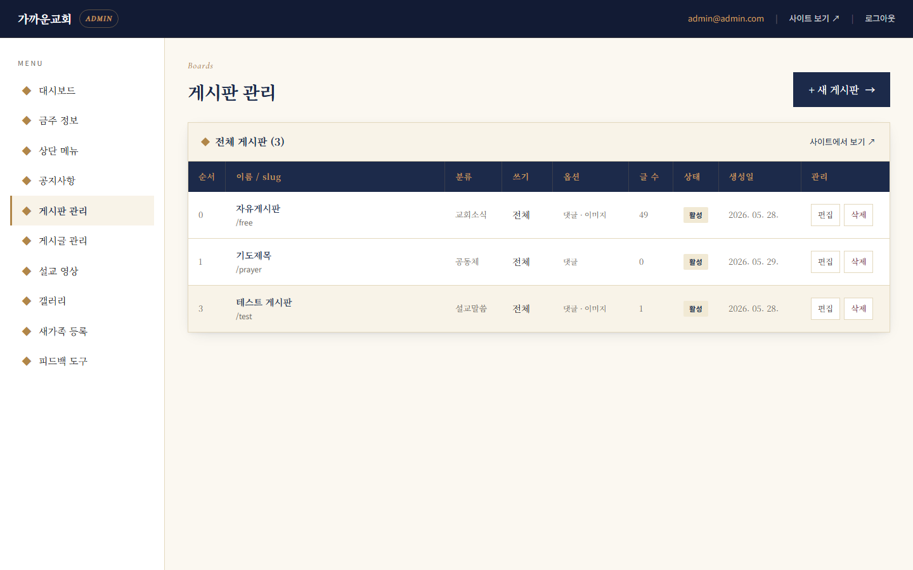
📍 위치 · 사이드 메뉴 → 게시판 관리
1
이름 / slug — slug(예: free)는 인터넷 주소에 들어가는 영문 이름입니다. 한 번 정하면 가급적 바꾸지 마세요.
2
분류 — 사이트 상단 메뉴 중 어디에 들어갈지 정합니다. (예: 교회소식 분류면 그 메뉴 아래에 자동으로 들어가요)
3
쓰기 — 누가 글을 쓸 수 있는지. 전체는 비회원도 쓸 수 있고, 회원은 로그인한 사람만 가능합니다.
4
글 수 · 상태 — 그 게시판에 들어 있는 글 개수와 활성/비활성 여부. 비활성으로 두면 사이트 메뉴에서 잠시 숨길 수 있어요.
5
오른쪽의 편집 · 삭제로 설정을 바꾸거나 게시판을 통째로 지울 수 있습니다. (단, 글이 남아 있으면 삭제되지 않아요 — 안전장치)
② 새 게시판 만들기
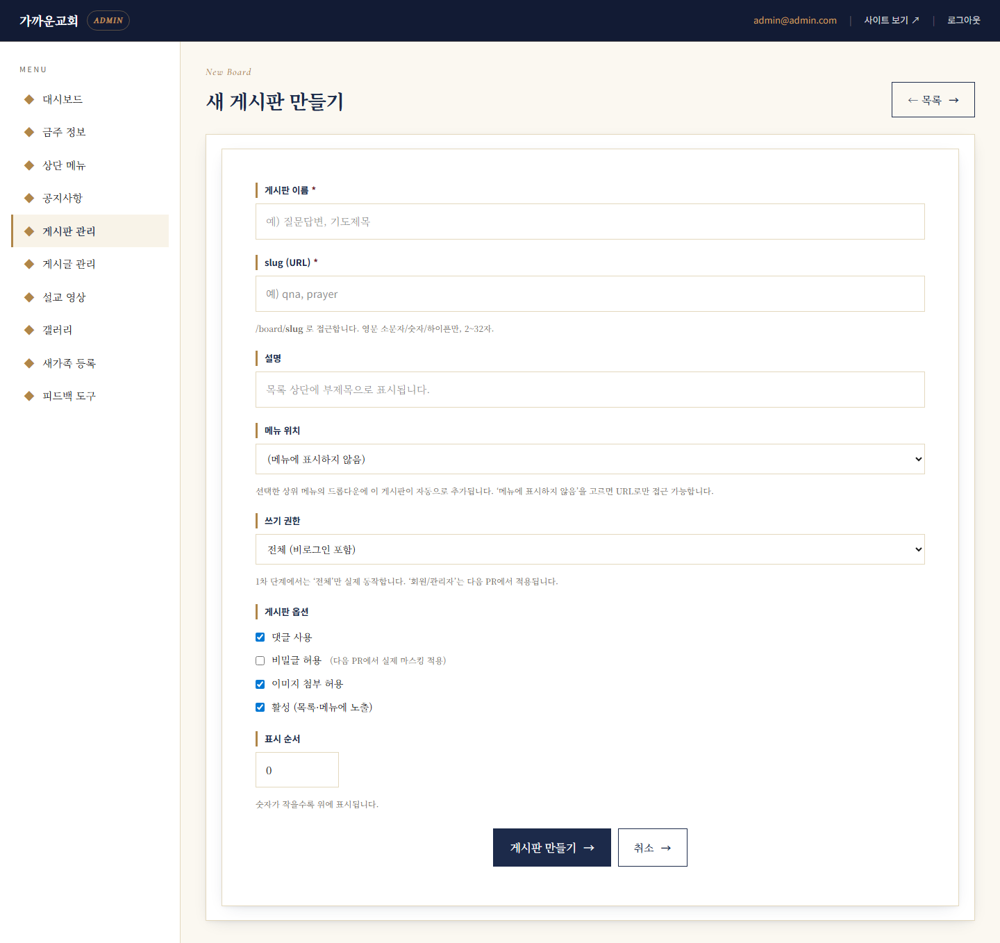
📍 위치 · 게시판 목록 오른쪽 위 + 새 게시판 버튼
- 게시판 이름을 정합니다. (예:
기도제목)
- slug는 짧은 영문으로 정합니다. (예:
prayer) → 인터넷 주소가 /board/prayer가 됩니다.
- 설명은 게시판 목록 위에 부제목처럼 보입니다. 한 줄로 짧게.
- 메뉴 위치 — 사이트 상단 메뉴 중 어디에 넣을지 선택.
(메뉴에 표시하지 않음)을 고르면 주소 직접 입력으로만 들어갈 수 있어요.
- 쓰기 권한 — 처음엔
전체로 두시면 됩니다.
- 게시판 옵션 — 댓글, 이미지 첨부 등을 켜고 끕니다. 기본값 그대로 두셔도 무방합니다.
- 맨 아래 “게시판 만들기”를 누르면 끝.
주의
slug에 한글이나 띄어쓰기를 넣을 수 없습니다. 영문 소문자·숫자·하이픈(-)만 가능합니다.
7. 게시글 관리하기 (성도들이 쓴 글)
성도들이 게시판에 올린 글을 한 자리에서 확인하고, 문제가 있는 글을 지울 수 있는 화면입니다.
관리자 — 모든 보드의 글 한 곳에서
사이트 — 보드별 입구
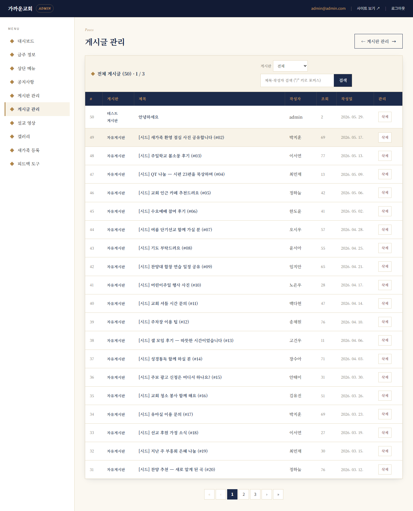
📍 위치 · 사이드 메뉴 → 게시글 관리
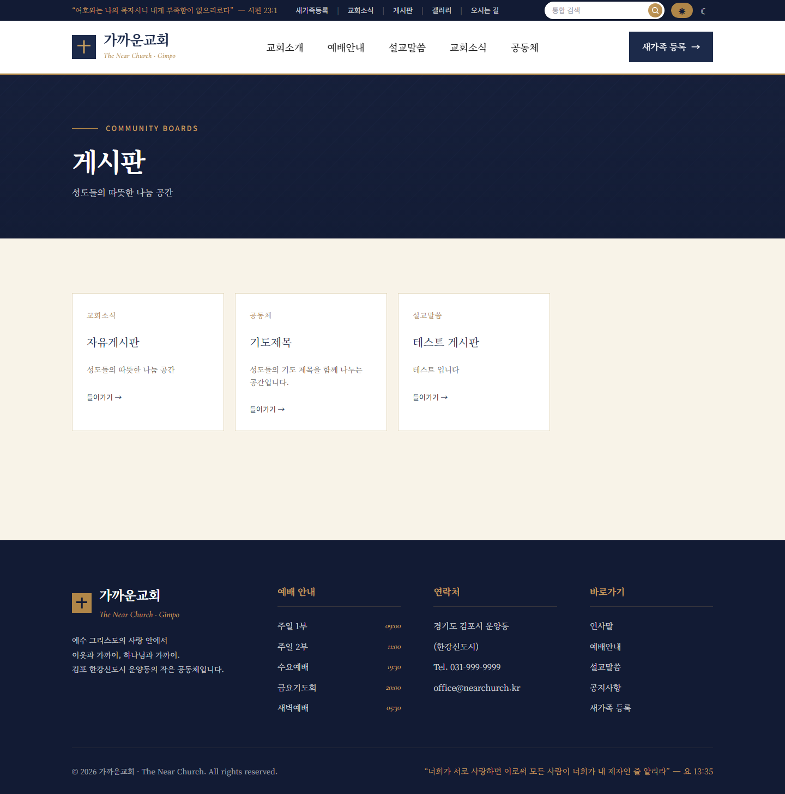
📍 위치 · 사이트 상단 메뉴 → 게시판 (또는 분류별 메뉴)
1
게시판 필터 — 특정 게시판(자유게시판 / 기도제목 등)의 글만 골라서 봅니다.
2
제목·작성자 검색창 — 글 제목이나 글쓴 분 이름의 일부를 적으면 빠르게 찾을 수 있어요.
3
제목을 클릭하면 새 창으로 해당 글이 사이트 모습 그대로 열립니다. 내용을 확인하고 닫으시면 됩니다.
4
오른쪽 삭제 버튼으로 부적절한 글을 지울 수 있습니다. 한 번 더 확인 창이 뜨므로 안심하세요.
5
제목 옆 📎 클립 표시는 이미지가 첨부된 글이라는 뜻입니다.
참고
관리자가 게시글을 새로 작성하는 기능은 따로 없습니다. 글은 성도들이 사이트에서 직접 쓰는 것이고, 관리자는 “정리·삭제” 역할만 합니다. 만약 직접 글을 올리시려면 사이트 화면에서 + 새 글을 누르시면 됩니다.
8. 설교 영상 등록하기
유튜브에 올라간 설교 영상을 사이트에 가져와 진열하는 곳입니다.
① 설교 목록
관리자 — 등록·수정
사이트 — 성도들이 보는 화면
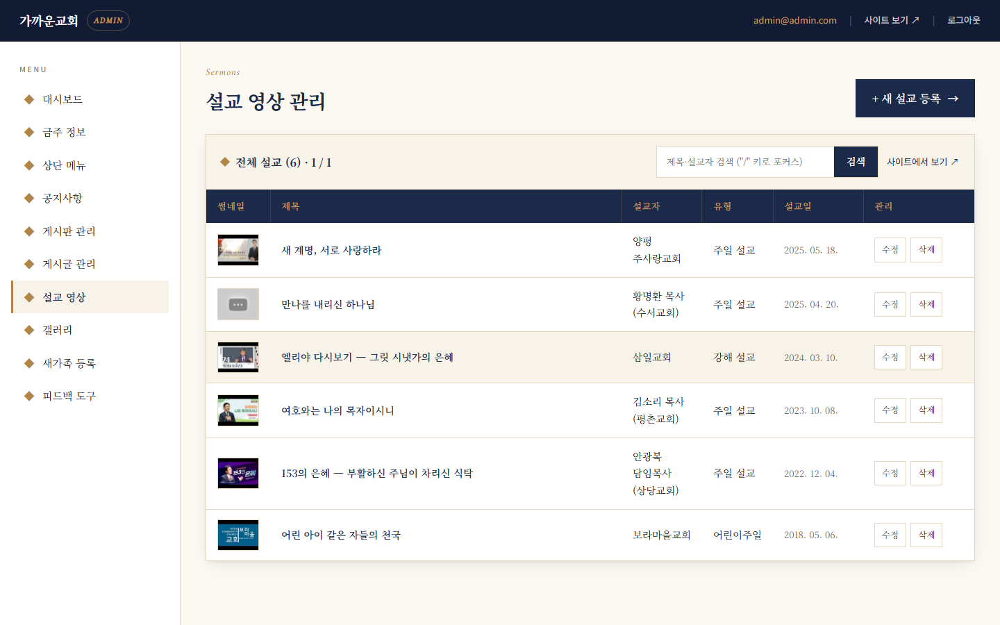
📍 위치 · 사이드 메뉴 → 설교 영상
📍 위치 · 사이트 상단 메뉴 → 설교말씀 → 설교 영상
② 새 설교 등록
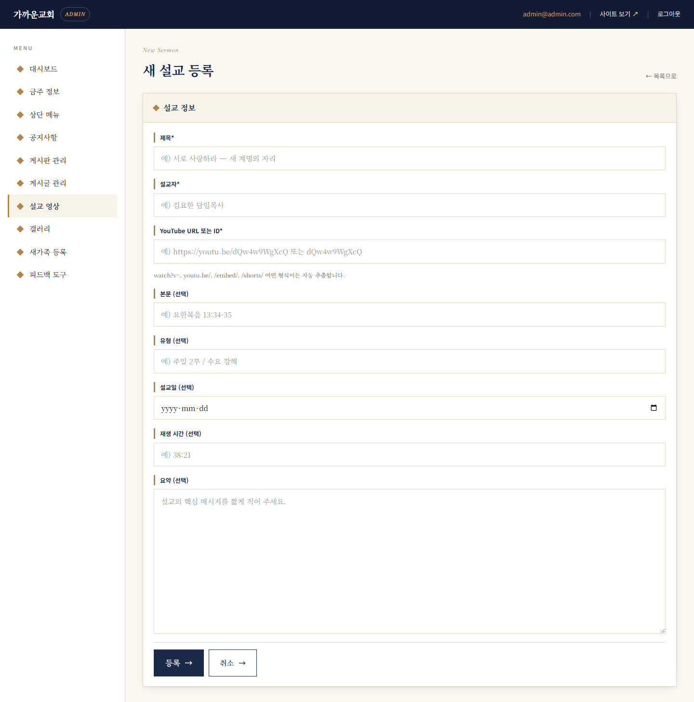
📍 위치 · 설교 목록 오른쪽 위 + 새 설교 등록 버튼
- 제목 — 설교 제목 그대로. 예:
서로 사랑하라 — 새 계명의 자리
- 설교자 — 예:
김요한 담임목사
- YouTube URL 또는 ID — 유튜브 영상 페이지에서 주소창의 주소를 그대로 복사해서 붙여넣기만 하시면 됩니다.
예: https://youtu.be/dQw4w9WgXcQ 또는 https://www.youtube.com/watch?v=dQw4w9WgXcQ
- 본문 (선택) — 예:
요한복음 13:34-35
- 유형 (선택) — 주일 1부 / 주일 2부 / 수요 강해 등. 입력란을 클릭하면 자주 쓰는 것들이 자동 제시됩니다.
- 설교일 (선택) — 달력에서 날짜를 선택합니다. 설교 영상은 이 날짜 순서로 정렬돼요.
- 요약 (선택) — 설교의 핵심 메시지를 2~3줄로 짧게.
- 등록 버튼을 누르면 끝. 사이트의 설교 영상 페이지 맨 위에 자동 등장합니다.
팁
YouTube ID는 영상 주소에 들어 있는 11자리 영문/숫자예요. 어떤 형태로 붙여넣으셔도 사이트가 알아서 찾아냅니다. 모르시겠으면 주소창의 주소 전체를 그대로 복사해주세요.
9. 갤러리에 사진 올리기
예배, 행사, 교제, 봉사 등의 사진을 올리는 곳입니다.
① 갤러리 목록
관리자 — 사진 등록·삭제
사이트 — 성도들이 보는 갤러리
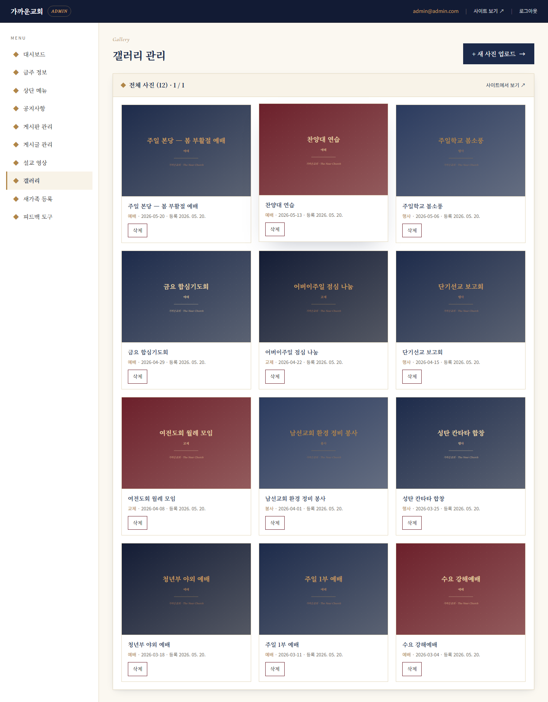
📍 위치 · 사이드 메뉴 → 갤러리
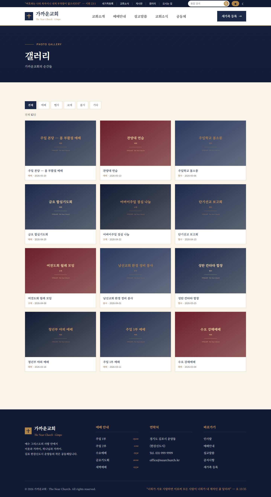
📍 위치 · 사이트 상단 메뉴 → 설교말씀 → 갤러리
1
사진 하나에 마우스를 올리면 제목·분류·날짜와 함께 빨간 삭제 버튼이 나타납니다.
2
분류는 5가지로 정해져 있습니다: 예배 · 행사 · 교제 · 봉사 · 기타. 새 사진 올리실 때 골라주세요.
② 새 사진 업로드
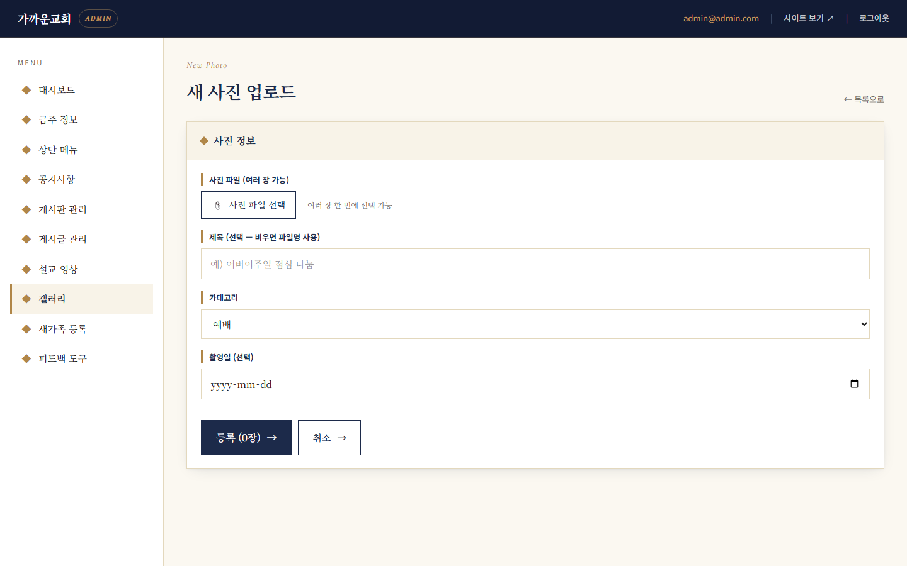
📍 위치 · 갤러리 목록 오른쪽 위 + 새 사진 업로드 버튼
- 제목을 적습니다. 예:
2026년 어버이 주일 행사
- 분류를 고릅니다. (예배·행사·교제·봉사·기타 중 하나)
- 찍은 날짜 (선택)를 달력에서 고릅니다.
- 사진 파일 — 컴퓨터에서 파일을 골라서 올립니다. JPG·PNG 모두 가능합니다.
- 업로드 버튼을 누르면 끝.
주의
사진이 너무 크면 (5MB 이상) 업로드가 오래 걸리거나 실패할 수 있습니다. 휴대폰 사진이면 보통 괜찮지만, 카메라 RAW 같이 큰 파일은 미리 줄여서 올려주세요.
팁
초상권에 주의해주세요. 본인이 사진 올리는 걸 원치 않는 분이 또렷이 찍힌 사진은 가급적 올리지 않거나, 가린 뒤에 올리는 것이 좋습니다.
10. 새가족 등록 관리하기
사이트의 “새가족 등록” 폼을 통해 들어온 신청자들을 정리하는 곳입니다.
관리자 — 신청자 목록·상태 관리
사이트 — 새가족이 작성하는 폼
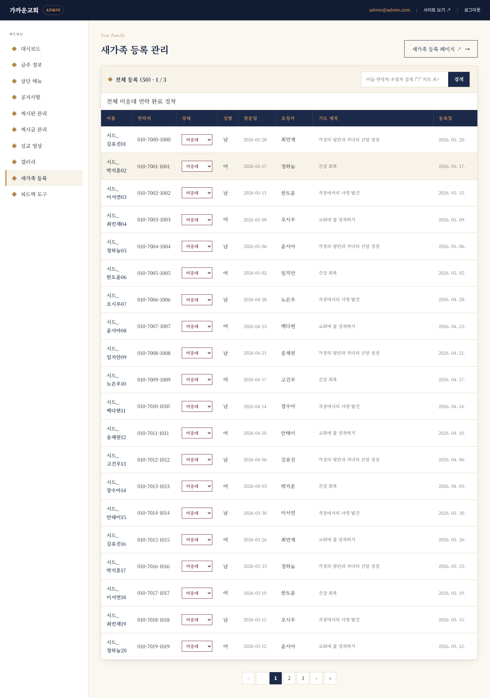
📍 위치 · 사이드 메뉴 → 새가족 등록
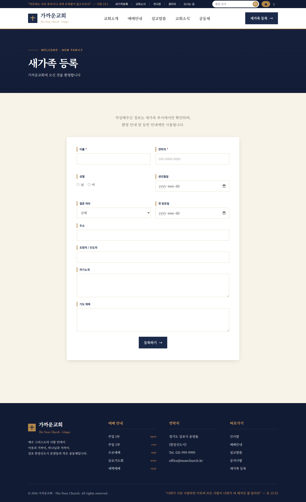
📍 위치 · 사이트 오른쪽 위 새가족 등록 → 버튼
화면 보는 법
1
상태 필터 (전체 · 미응대 · 연락 완료 · 정착) — 클릭해서 원하는 상태만 골라봅니다.
2
검색창 — 이름·연락처·초청자 이름의 일부를 적으면 빠르게 찾을 수 있어요.
3
상태 드롭다운 — 각 줄에서 상태를 바로 바꿀 수 있습니다. (미응대 → 연락 완료 → 정착)
4
기도 제목 — 새가족이 작성한 기도 제목이 짧게 보입니다. 두 줄까지만 보여요. 마우스를 올리면 더 보입니다.
새가족이 들어왔을 때 운영 흐름
- 새가족이 사이트에서 폼을 작성하시면, 자동으로 “미응대” 상태로 들어옵니다.
- 담당자가 전화나 문자로 환영 인사를 드립니다.
- 연락이 닿으면 상태를 “연락 완료”로 바꿉니다.
- 예배에 정기적으로 출석하시면 상태를 “정착”으로 바꿉니다.
중요
등록 후 7일이 지났는데도 “미응대” 상태인 분이 있으면, 관리자 대시보드 상단에 빨간 박스로 표시됩니다. 보이시면 그 주 안에 꼭 연락을 부탁드립니다. 첫인상이 정착에 결정적이에요.
11. 상단 메뉴 바꾸기
사이트 맨 위의 메뉴 구조(교회소개 · 예배안내 · 설교말씀 · 교회소식 · 공동체)를 바꾸는 곳입니다.
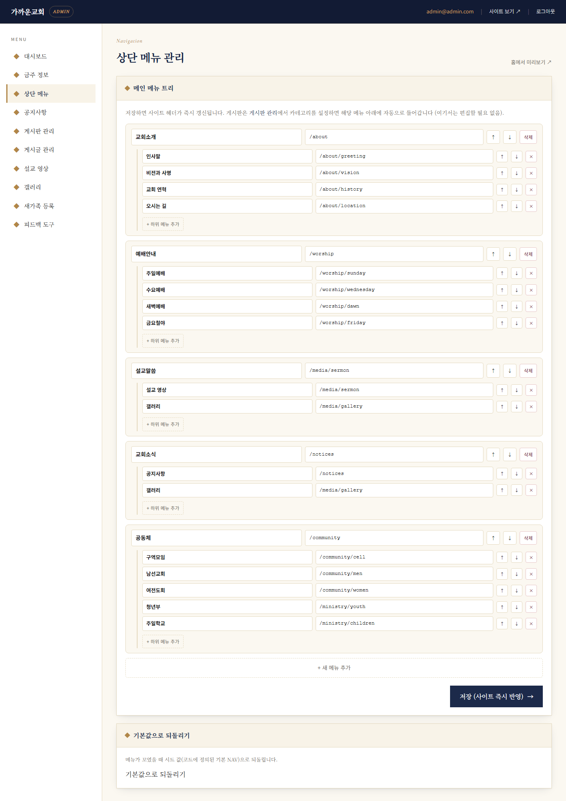
📍 위치 · 사이드 메뉴 → 상단 메뉴
1
상위 메뉴 카드들이 세로로 늘어서 있습니다. 각 카드 안에 작은 하위 메뉴들이 들어 있어요.
2
메뉴 이름 옆 위 ↑ · 아래 ↓ · 삭제 × 버튼으로 순서를 바꾸거나 메뉴를 지울 수 있습니다.
3
하위에서 “하위 추가”를 누르면 새 메뉴 항목을 추가할 수 있어요.
4
맨 아래 “저장 (사이트 즉시 반영)”을 누르셔야 변경이 사이트에 적용됩니다.
팁
이 화면은 자주 만지지 않으셔도 됩니다. 게시판은 “게시판 관리”에서 분류만 정해주시면 자동으로 메뉴에 들어가요. 여기서 손댈 일은 보통 메뉴 이름을 바꾸거나 새 카테고리를 만들 때뿐입니다.
주의
혹시 메뉴가 꼬여서 사이트가 이상해졌으면, 아래쪽 “기본값으로 되돌리기” 버튼을 한 번 눌러주세요. 처음 상태로 복구됩니다.
12. 피드백 도구 — 사이트 수정 요청 정리
사이트의 문구·사진을 “이렇게 바꿔주세요” 하고 담당자에게 전달하는 도구입니다. 어드민에서 직접 못 바꾸는 항목(예: 홈 화면 배너 이미지, 인사말 본문, 비전 문구 등)에 사용합니다.
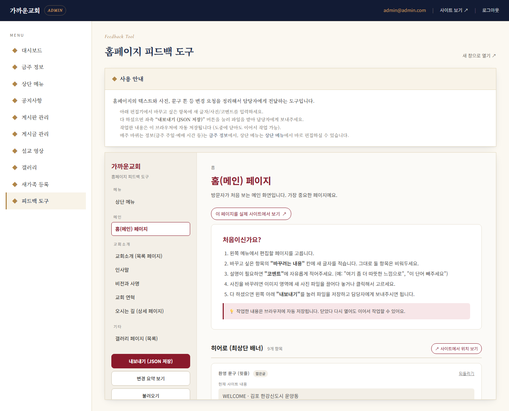
📍 위치 · 사이드 메뉴 → 피드백 도구
- 왼쪽 메뉴에서 바꾸고 싶은 페이지를 고릅니다. (홈 / 교회소개 / 인사말 / 비전 / 연혁 / 오시는 길 / 갤러리)
- 오른쪽에 그 페이지의 항목들이 보입니다. 바꾸시려는 항목 칸에 새로운 글자나 사진을 넣으세요.
- 설명이 필요하면 “코멘트” 칸에 자유롭게 적어주세요. (예:
여기 좀 따뜻한 느낌으로, 이 단어 빼주세요)
- 다 끝나면 왼쪽 아래 “내보내기 (JSON 저장)”을 눌러 파일로 저장합니다.
- 그 파일을 담당자(개발팀)에게 메일·카톡으로 보내주세요.
팁
작업 중간에 창을 닫으셔도 이 브라우저에는 자동으로 저장되어 있어서, 다음에 다시 들어오시면 이어서 작업할 수 있어요.
13. 자주 묻는 질문
Q. 비밀번호를 잊어버렸어요.
관리자 이메일은 한 번 등록되면 비밀번호 재설정을 직접 하실 수 없습니다. 개발 담당자에게 연락해 주시면 임시 비밀번호를 새로 발급해 드립니다.
Q. 글을 잘못 올렸어요. 사이트에서 사라지나요?
네. 관리자 화면에서 삭제 버튼을 누르시면 사이트에서도 즉시 사라집니다. 다만 한 번 지운 글은 되살릴 수 없으니, 삭제 전 확인 창을 잘 읽어주세요.
Q. 같은 글을 두 번 올렸어요.
둘 중 한 글을 삭제해 주시면 됩니다. 공지의 경우 “중복 공지” 상태로 두면 성도들이 헷갈리니 빨리 정리하시는 게 좋아요.
Q. 게시판에 부적절한 글이 올라왔어요.
좌측 메뉴 “게시글 관리”에서 해당 글을 찾아 삭제해 주세요. 검색창에 제목 일부나 작성자 이름의 일부를 적으시면 빨리 찾을 수 있습니다.
Q. 휴대폰으로도 관리자 일을 할 수 있나요?
네, 가능합니다. 같은 주소로 휴대폰에서 로그인하시면 됩니다. 다만 표가 길게 늘어진 화면(예: 게시글 관리, 새가족 등록)은 컴퓨터로 보시는 게 편합니다.
Q. 화면이 갑자기 비어 보이거나 에러가 나요.
먼저 새로고침(F5)을 해보세요. 그래도 안 되면 한 번 로그아웃 후 다시 로그인해 보세요. 그래도 이상하면 화면 모습을 그대로 사진 찍어 담당자에게 보내주시면 빠르게 도와드릴 수 있습니다.
Q. 사이트 디자인이 휴대폰에서는 어떻게 보이나요?

📱 휴대폰 화면 · 메뉴는 오른쪽 위 햄버거(≡) 버튼 안에 들어갑니다.
Q. “새 게시판”을 만들었는데 사이트 메뉴에 안 보여요.
게시판 만들 때 “메뉴 위치” 칸을 (메뉴에 표시하지 않음)으로 두셨거나, “활성” 체크가 빠져 있을 수 있습니다. 게시판 관리 → 편집에서 메뉴 위치를 고르고 “활성”에 체크해 주세요.
Q. 매주 “금주 정보”를 바꿔야 하는데 자꾸 잊어버려요.
매주 토요일 저녁에 핸드폰 알람을 맞춰두시면 좋습니다. 일이 익숙해지시면 1분이면 끝나는 작업이에요.
도움이 더 필요하시면 — 개발 담당자에게 “관리자 매뉴얼 ○○항목 보고도 모르겠어요” 하고 화면 사진을 같이 보내주세요. 매뉴얼에 부족한 부분은 계속 보완해 드리겠습니다.